Menù segreto
È possibile che invece di vedere la solita Mita quando si va al menu principale, lo sfondo diventi rosso e il modello sia invece la sua versione Creepy.
Interazioni col menù
Quando si cerca di passare sopra il pulsante Esci nel menu principale, il pulsante cerca di evitare
il cursore.
Se si clicca più volte sul volto di Mita nel menù principale, lei agita la mano davanti al viso e cerca di scacciarvi;
Se si abbassa il volume a 0, Mita ferma il vibing.
Minigioco segreto
Per avviare il minigioco segreto devi rimanere AFK per 2 minuti, in quel momento il personaggio
prenderà dalla tasca una console portatile.

Codice morse
Puoi trovare un codice morse nella stanza del giocatore

"LO SVILUPPO DI UN GIOCO È FRUSTRANTE. NON SONO SICURO CHE LE ASPETTATIVE DELLA GENTE SARANNO SODDISFATTE. MA DOBBIAMO CONTINUARE. SPERO DI POTERVI INTRATTENERE. GRAZIE PER L'ACQUISTO!"
Rivista anti-tecnologia
Nella stanza del giocatore puoi trovare una rivista anti-tecnologia che ritrae un robot simile a
Bender di futurama

Mimic
Una figura dall'aspetto inquietante può essere vista all'inizio del gioco nella camera da letto del
giocatore. Prima di interagire con il telefono, se il giocatore fissa lo specchio per circa 65
secondi, la figura appare alle sue spalle e se ne va poco dopo. Se il giocatore si gira prima che la
figura se ne vada da sola, essa scomparirà automaticamente e non tornerà più.

Pirateria
Se si utilizza una copia pirata del gioco, i nomi suggeriti per primi hanno a che fare con la rapina,
ad esempio “ladro”, “rapinatore”, ecc.
Questo, tuttavia, potrebbe non essere sempre vero, in quanto il primo nome suggerito è solitamente
il vostro nickname o il nickname/nome del sito pirata. (Ad esempio, se si scarica una copia da un
sito di pirateria chiamato ''coffee123'', il primo nome suggerito sarà probabilmente ''coffee123'').
Inserimento del nome
Durante l'inserimento del nome diverse gimmick possono essere triggerate:
“Mita” - Quando si inserisce Mita come nome, la ragazza chiede se questo
è il suo vero nome, ma poiché vuole essere l'unica Mita, l'episodio viene
riavviato.
Soprannomi degli sviluppatori (“MakenCat” e “Umeerai”) - Mita dirà che è
contenta che li conosciate, ma non potrete giocare come gli sviluppatori e ricomincerete
l'episodio.
Se si usano numeri nel nome, Mita si lamenterà della mancanza di
immaginazione del giocatore.
Se si inserisce una parola oscena, Mita dirà che conosce tutte le
parolacce e riavvierà l'episodio.
Quando si inserisce il proprio nome come “Mila”, il gioco si illumina
notevolmente. (non testato)
Sorriso di Mita
Quando ci si avvicina a Mita di persona per la prima volta, girandosi si può vedere una rapida inquadratura di lei che si avvicina alle spalle con un sorriso minaccioso. Utilizzando la Freecam, è possibile osservare il sorriso inquietante di Crazy Mita a proprio piacimento finché non si esce dalla Freecam e il giocatore non si gira di nuovo. Ma se si rimane in AFK, Mita si calma e cambia casualmente tra quattro espressioni: felice, confusa, guarda di lato e poi torna a guardare con un sorriso tutt'altro che felice.


La seconda volta che succede è dopo aver mangiato con Mita e lei vi porta in bagno per prendere le medicine. Manterrà questa espressione finché non sarete entrambi in bagno.
Armata di papere
All'inizio del gioco, dopo essere entrati nella versione di Crazy Mita, è possibile trovare e guardare le papere in un ordine specifico, che le richiamerà nella doccia. La prima anatra si trova nel cesto accanto al lavandino, la seconda è in cucina sulla credenza e l'ultima si trova sopra la testa del personaggio dopo aver interagito con lo specchio.
Osservatrice silenziosa
Nel primo capitolo, I'm Inside a Game? è possibile vedere una statuetta di un personaggio di uno degli altri giochi di AIHASTO, Umfend, sulla mensola sopra il computer di Mita. Una volta che il giocatore ha attivato il teletrasporto nella stanza e ha fatto scattare la corrente, gli occhi della statuetta si illumineranno di rosso e il suo sguardo seguirà costantemente il giocatore.
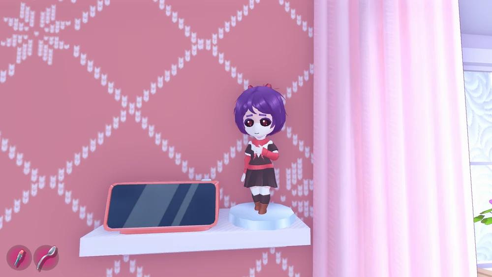
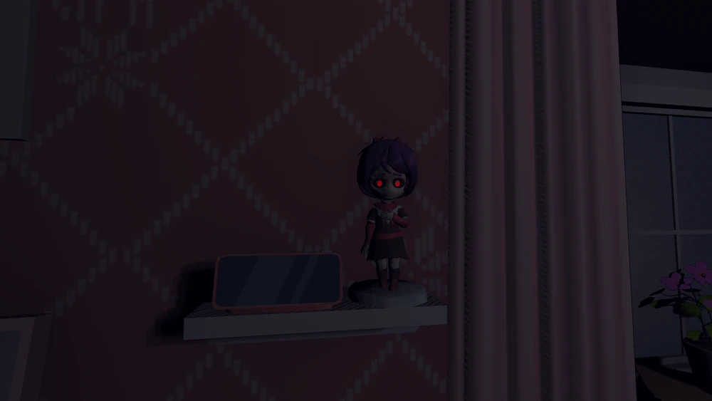
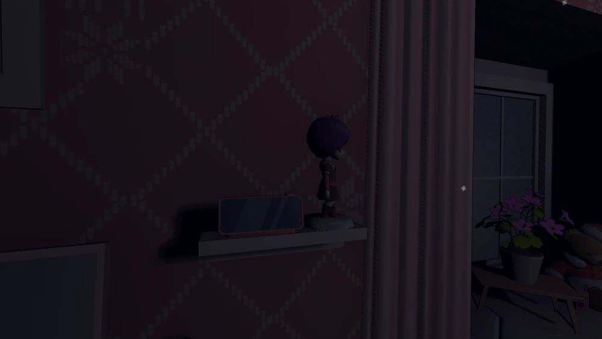
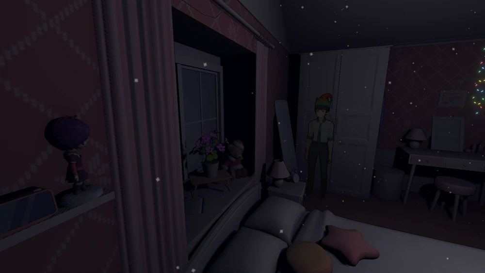
Motosega nella cantina
Nella cantina di Edo nel capitolo The Basement, c'è una motosega con una etichetta "Pochita saw" come reference a Chainsaw Man
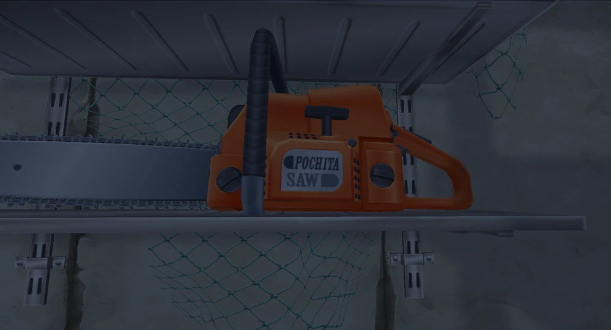
Lo scheletro nell'armadio
Nella cantina dietro l'armadio in v1.9, c'è un armadietto nella stanza delle foto; nella parte superiore dell'armadietto c'è uno scheletro di una piccola creatura cornuta.
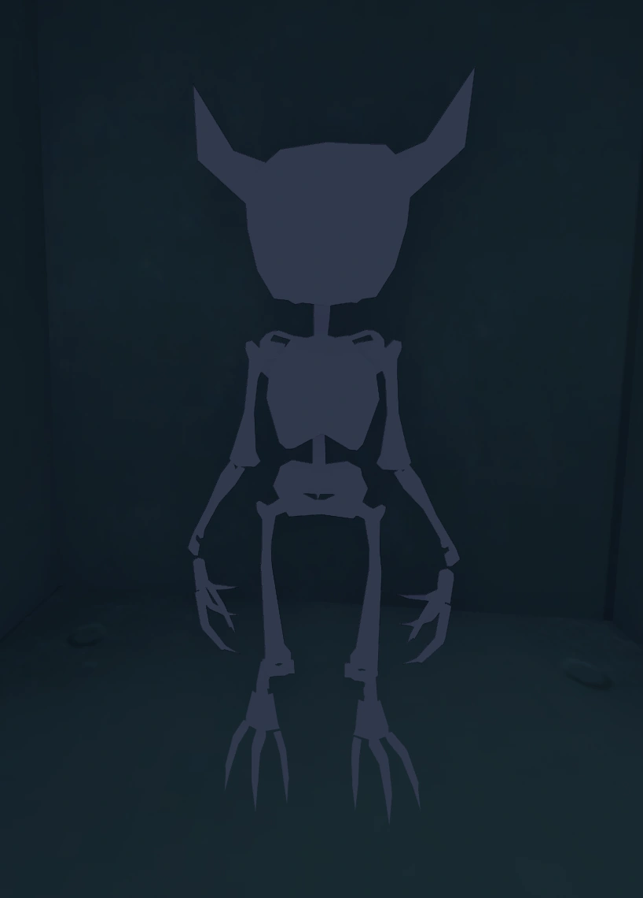
Il Signore degli Anelli
L'Anello de Il Signore degli Anelli può essere trovato volando out of bounds sopra la scena in cui si osservano Mita e un altro giocatore su una console. Il giocatore (che in realtà è composto da due braccia) indossa l'Anello.
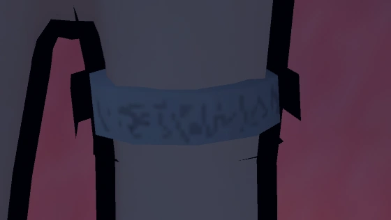
Collare binario
Nel capitolo “Beyond the world”, il giocatore incontra un'altra persona che viaggia nell'area. Questa persona ha un collare con un codice binario che scorre su di essa, lo stesso che si trova sull'anello del giocatore. Convertendo questo codice in testo si scopre che dice “ringtravel”.
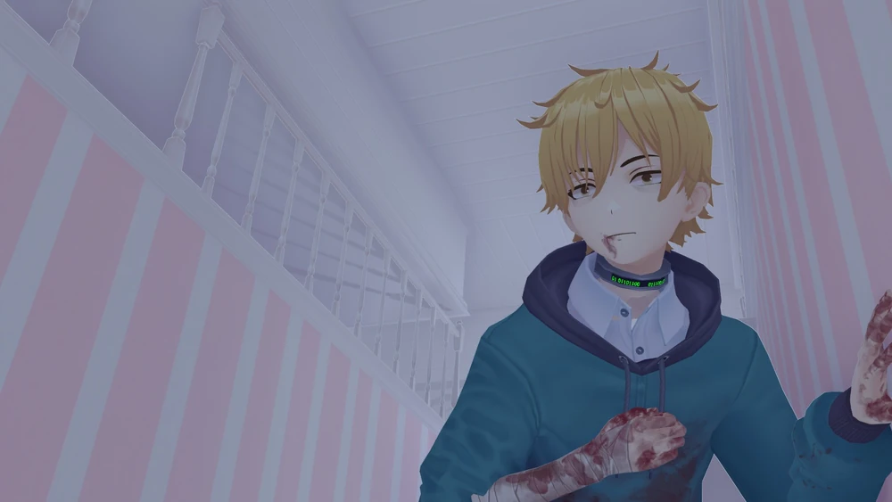
Mita long-leg
Se mai aveste pensato "mi piacciono le donne con le gambe lunghe"
preparatevi alla donna della vostra vita:
Nel capitolo “Beyond the world”, si trova il corridoio infinito poco prima del ricongiungimento con
Kind Mita. Se il giocatore continua ad andare a destra dal punto di ingresso, alla fine vedrà in
lontananza un Mita dalle gambe lunghe, che attraverserà il corridoio e sparirà attraverso una porta.
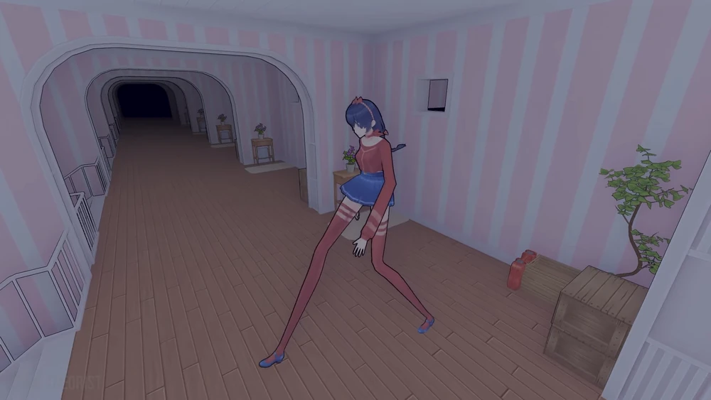
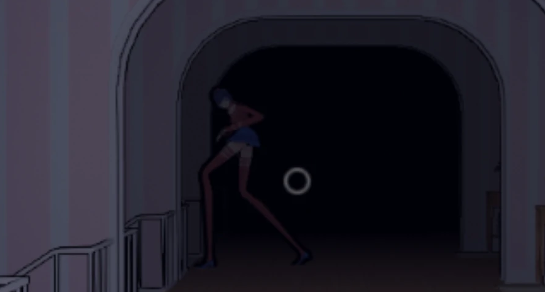
Uno strano riflesso
Nel capitolo "Dummies and Forgotten Puzzles", nella sezione in cui bisogna evitare le Mita manichino nella grande stanza con l'acqua bassa e molti manichini veloci dagli occhi rossi, c'è una colonna vicino alla scala di uscita in cui si può vedere un riflesso di Crazy Mita nell'acqua.
La stanza discord
C'è una stanza segreta nel capitolo "Dummies and Forgotten Puzzles" in cui si può interagire ad un computer, verranno mostrati messaggi di tutti i giocatori attualmente in partita e si potrà joinare nel server discord.
Kaiju
Nel capitolo "Dummies and Forgotten Puzzles", prima di attraversare il ponte ventoso, si vede una grande sagoma dall'aspetto demoniaco passare davanti alla luna.
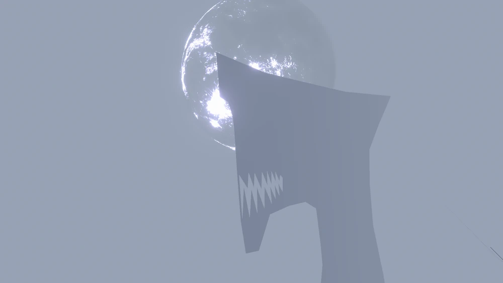
Doggo
Nella camera da letto di Mita, sul davanzale della finestra c'è il disegno di un cane che ricorda molto l' "annoying dog" di Undertale.
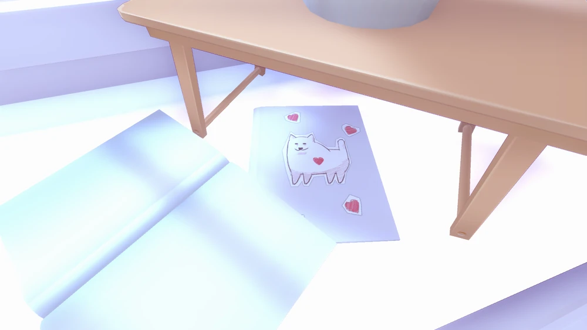
Cammy stretch
Nel capitolo "She Just Wants to Sleep", quando incontrate per la prima volta Sleepy Mita e lei vi chiede di prepararle del caffè, dopo averglielo consegnato si stiracchia, e l'allungamento finale è apparentemente un riferimento alla famosa taunt dello stretching di Cammy.
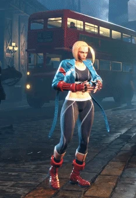
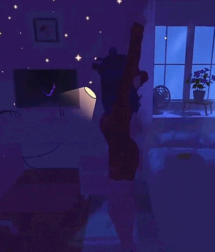
Strada per il binario 9 ¾
Nella cucina di Mila, c'è un muro segreto difettoso che il giocatore può attraversare, entrando così in uno spazio vuoto all'esterno della cucina. In questo modo Mila si confonde e si chiede dove sia finito il giocatore.
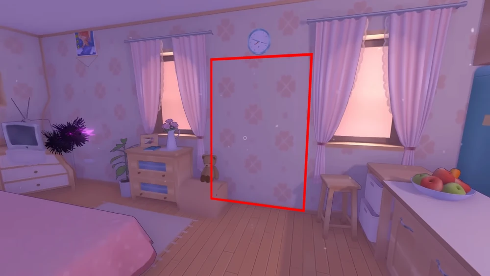
Testo codificato nel core
GUARDA MAMMA COME GLI UNKNOWN!
Nel capitolo “Old version” nella Sala del Nucleo, sul lato sinistro della parete, c'è un messaggio scritto in un alfabeto simbolico, che può essere decifrato con un semplice cifrario a sostituzione.
Il Player 9 era l'autore di questo messaggio dopo aver trascorso il resto del tempo nascosto nella Sala del Nucleo.
Tradotto si legge: “Una volta qui, non potevo tornare a casa. Non riesco a ricordare la mia vita, e quando sento parlare del -> mondo reale inizio a dubitare che esista davvero”.
Aiutami step-bro
Se si utilizza la Freecam mentre Mita ci fissa nel computer, è possibile vedere le gambe di Mita all'interno del muro del giocatore.
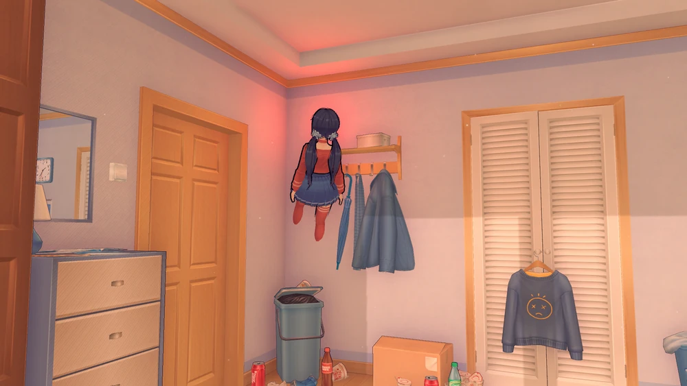
Andiamo, dentro e fuori, avventura di 20 minuti
Alla fine del gioco, nel capitolo “Leave The Core!”, dove si inserisce il proprio ID giocatore per uscire dal gioco, accanto al terminale del computer si trovano due monitor con i nomi “Rick” e “Morty”.
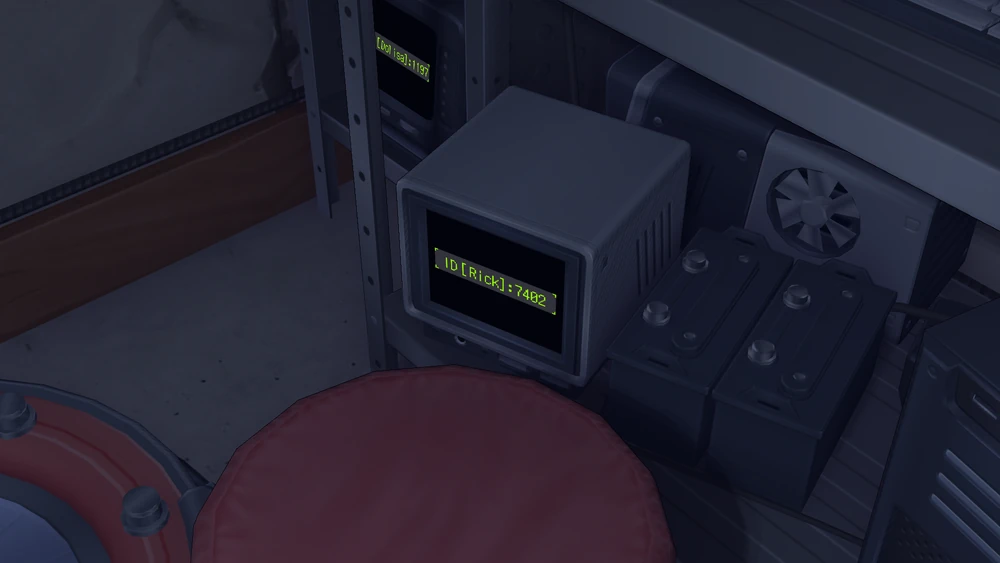
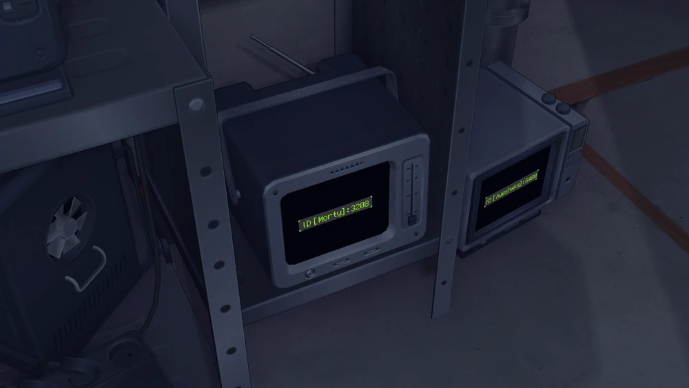
I nomi cambiano ogni volta che si entra nel capitolo, quindi non ci si imbatterà sempre in questo easter-egg
Inoltre, il file di gioco “Names.txt”, che si trova nella destinazione “C:\SteamLibrary\steamapps\common\MiSide\Data\Languages\English”, elenca i nomi “Rick”, “Morty”, “Beth” e “Summer”, tutti appartenenti ai personaggi principali della serie. Questi sono i nomi che appariranno sui monitor e forse anche sulle cartucce nel condotto. Per coincidenza, il nome “Jerry” non è presente nell'elenco, il che indica che gli sviluppatori sono veri fan di Rick e Morty.
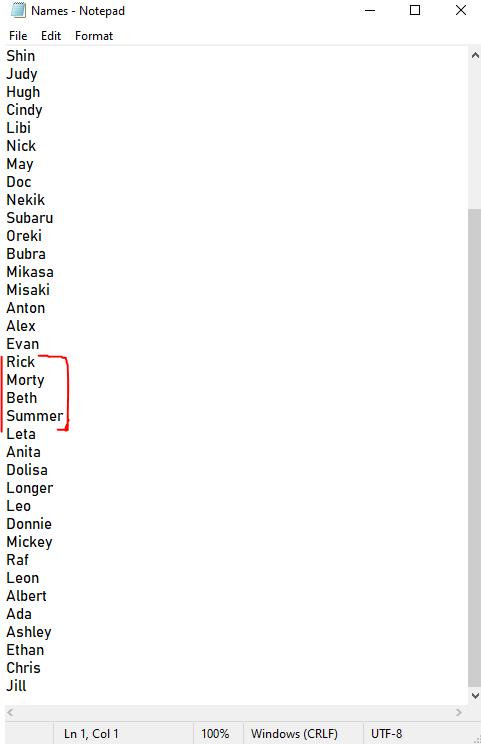